Projects:
Real Salt Lake Soccer Office & Teams Rooms
May 2016 - Sep 2016
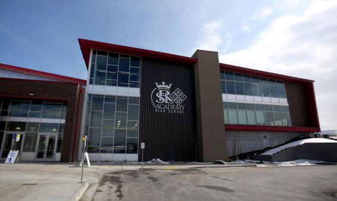
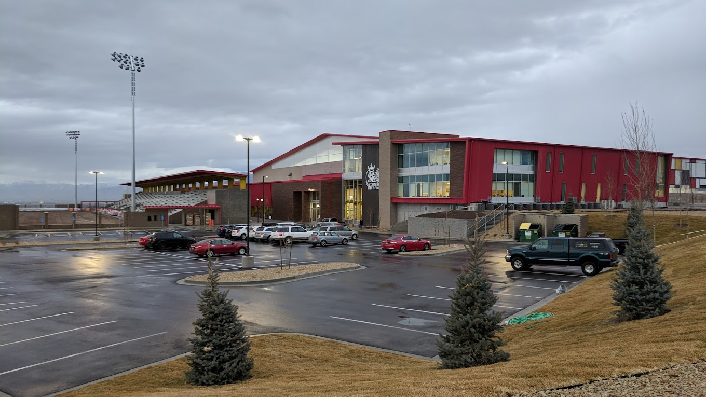
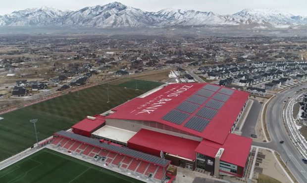
The project was for the professional soccer team in Utah. This project was broken up into 3 phases for ease of design.
My portion of design was a 3-story building. It utilizes Special Concentric Braced Frames as the resisting system.
I used a Risa 3D modeling software to design the entire project. I also performed several hand checks for the SCBF's.
I created additional models to analyze different parts of the structure due to some software limits.
I also helped check the truss frame portion that spanned over 400ft, largest in North America for a metal building.
King's Chapel
Oct 2016 - Jan 2017

This project was a 2-story building in Alaska. It utilized Buckling Restrained Braces for the resisting system.
I analyzed and designed the frames and coordinated with the BRB manufacturer to design the braces.
I performed the checks to verify beams and columns were adequate using RAM design software.
I also designed the braces for bracing the BRB system and used Risa 3D for stability checks.
Audi Showroom
Dec 2014 - Mar 2015
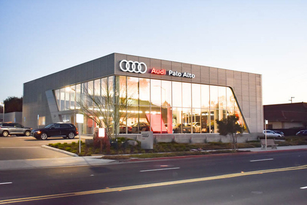
This project had a curved mezzanine and was in California. The structure also required the use of Special Moment Frames.
I analyzed and designed all of the frames. I also designed all of the special bracing by hand that goes with SMF structures.
I used Risa 3D software to help analyze and design the mezzanine. I designed all primary and secondary members for the structure.
1508 ChandlerH
Oct 2015 - Nov 2015
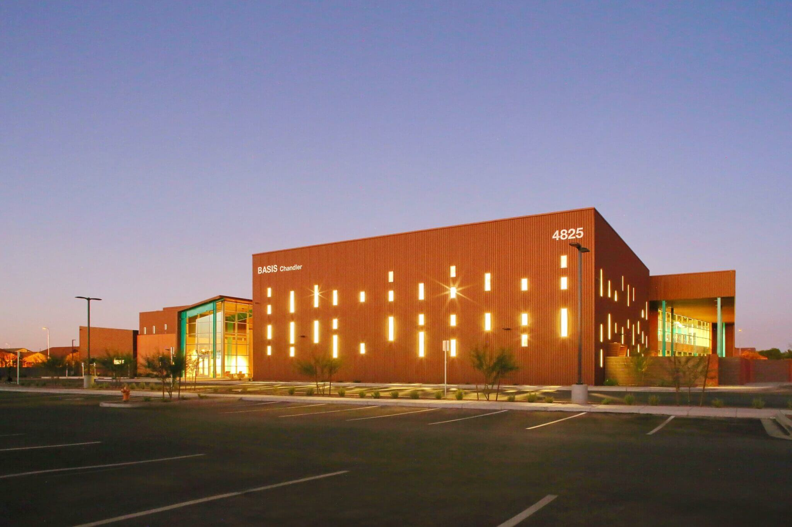
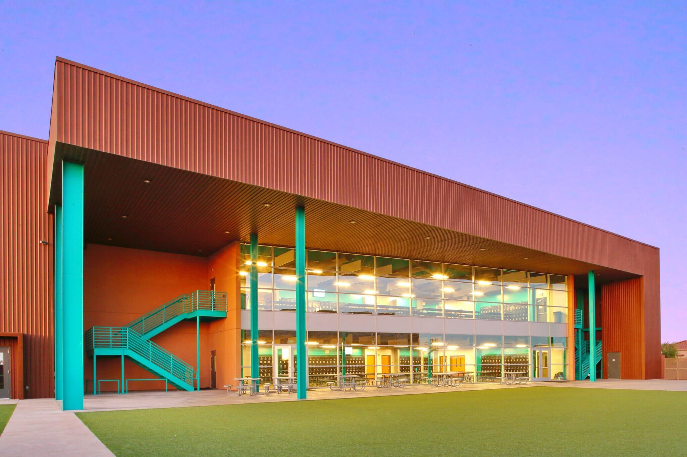
This project was an elementary school in Arizona that has 2 stories and used shear walls for the resisting system.
I analyzed the mezzanines (stories) with Risa 3D software. I also designed the diaphragms of each level by hand using the IAPMO Report.
I had to coordinate with the Engineer of Record to get the proper loadings into the shear walls and come up with connections to
transfer the loadings as well. It had 12 buildings that were all next to each other that I had to design for sharing loads or
provide seismic separation. I designed all primary and secondary members for the structure.
Bedrock Building B and D
Oct 2014 - Nov 2014
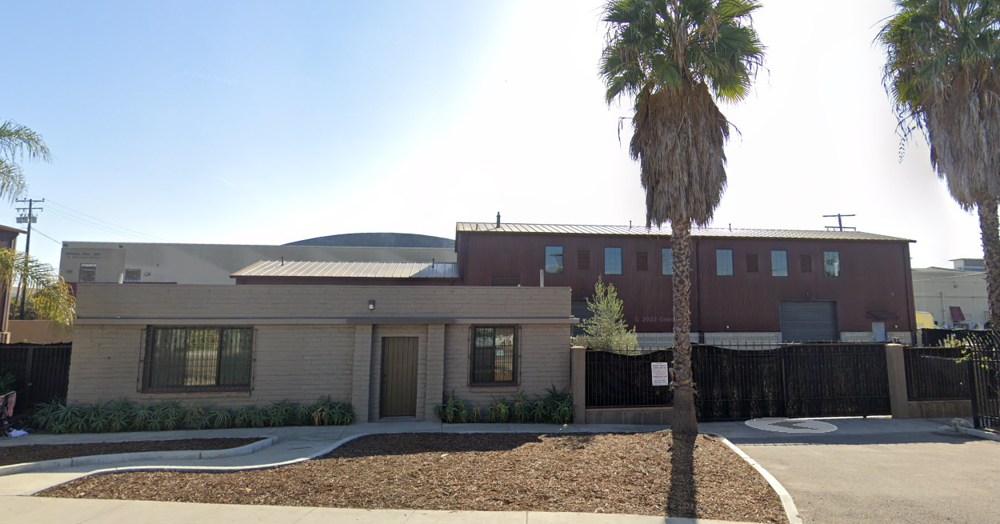
This Project had a future mezzanine (story) which required the use of Intermediate Moment Frames.
I calculated the fundamental period of each frame to determine the period of the structure.
I then analyzed and designed each frame using its period. I designed all primary and secondary members for the structure.
NAU Center for Aquatics and Tennis
Apr 2014 - Aug 2014
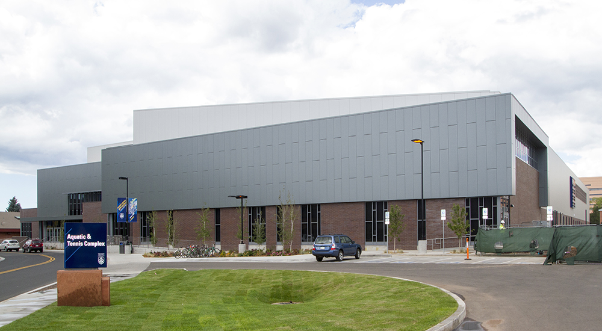
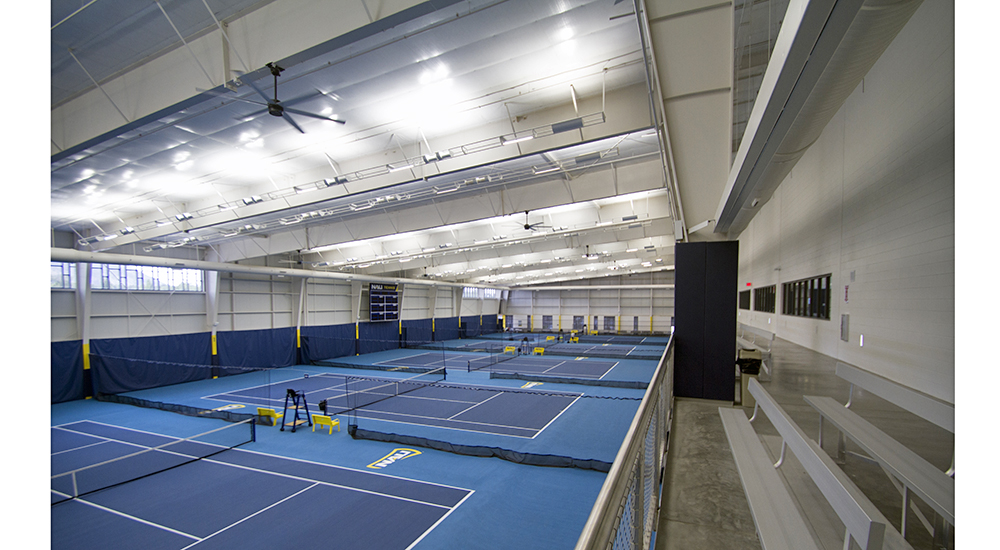
This was for Northern Arizona University and used Ordinary Moment Frames. It also linked up to another building so I had to
coordinate with other engineers for proper fitment and separations. I analyzed each frame and designed all primary and
secondary members for the structure.
Harris Thermal Manufacturing
Mar 2014 - Apr 2014
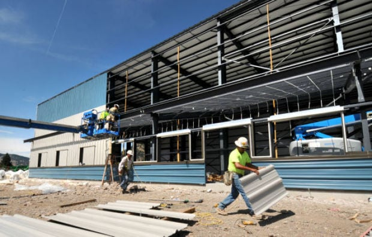
This job was located in Montana and used Ordinary Moment Frames. It also has (4) 30 Ton cranes.
I analyzed all of the resisting frames and bracing with the crane systems. I designed all primary and secondary members for
the structure.
Claremont Colony
Aug 2015 - Oct 2015
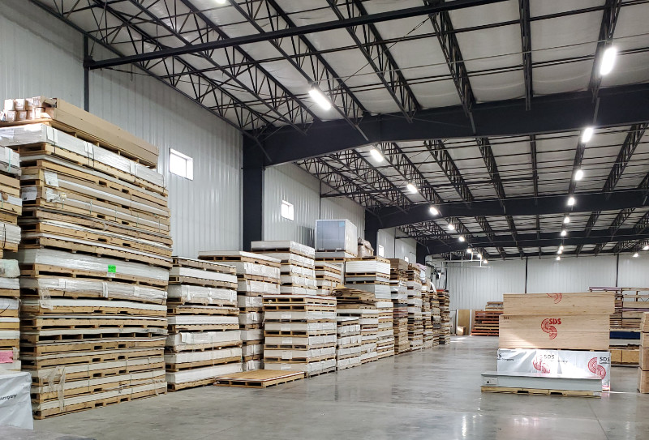
This project had Ordinary Moment Frames with roof joists instead of purlins (cold form). I had to analyze each frame and do
some additional checks for the flange bending forces they see due to the joists. I designed all primary and secondary members
for the structure.